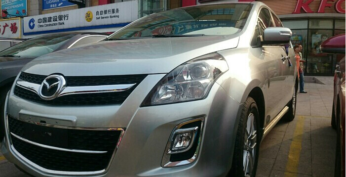

-
2010/11/28
新一代大型MPV Mazda8
隆重下线 畅然登场
-
2011/12/28
2011年搜狐汽车
MPV满意度冠军
-
2012/11/26
“焕然一芯”
2013款马自达8投放
-
2013年
2013款Mazda8—
—年度MPV
-
2013/11/21
旅游卫视汽车派——
最受商旅精英欢迎MPV
-
2015/3/9
2015款Mazda8
上市
高效动力总成，提供充沛动力的同时，兼顾高燃油经济性，其90km/h等速油耗仅为6.7L/100km。
强劲的MZR2.5L发动机，采用可变气门正时控制系统（S-VT）、可变涡流控制系统（TSCV）、可变进气歧管系统（VIS）等先进发动机科技，最大输出功率可达120/6000（kw/r/min），最高扭矩为226/4000（Nm/r/min），充分实现了高动力输出和即时响应的平衡，完美实现超低油耗与绿色环保特性。
麦弗逊式独立前悬架配合多连杆式独立后悬架，让操控更从容，乘坐更舒适。
是卓越前行的豪华商务舱，也是承载快乐的幸福生活舱。Mazda8以独特的人性化设计理念，为贵宾精心打造出第二排独立座椅，更以随需应变的座椅组合全面满足多样乘坐需求，从容体验宜商宜家的惬意享受。
采用785mm大开口设计，具备双侧智能防夹功能，多点操控轻松开合，彰显人性化科技。
第二排座椅可前后移动255mm超长距离，使腿部空间轻松到达400mm，实现“超越头等舱”的奢侈乘坐享受。
-
超低油耗经济实用

-
强劲动力 劲享澎湃
-
先进的独立悬架系统
-
尊崇第二排
-
智能双模式双侧电动滑动门
-
独立座椅超大空间
作者：zcw520
从购买马自达8提车到现在2个月，一直没时间交作业，今天抽空交个简单的作业。牌照不遮挡了，各位车友有幸看到了按个喇叭，马自达8久经考验的心脏，太多的人认为过时+落伍的变速箱，但本人觉得没那么差，换挡平顺有力，马自达8强大的第二排，经过考验坐3成年人没问题（8月底去的舟山一大家子7人满载），马自达8的空调系统很实用；车窗全一键升降，电动折叠后视镜也很方便，这个个人觉得厚道。


作者：吃饺子借醋
三个年头过去， 迎来第四季，兢兢业业， 很满意老八的表现，最大优点莫过于全能型， 商务接待，家具旅行，无所不能。
最近几年SUV盛行，成为大家的焦点，然而随着二胎政策正式下放，我预计MPV将会是下个热潮，马8凭借其优异的表现与不错的性价比，应该会大有作为吧，呵呵。 估计很多马8车友也是如此考虑的吧。
要说起老八的亮点，除了最亮眼的大空间外，饱满的前脸、蓝色仪表盘、VIP二排座椅，享受贵宾级别的待遇都是我最最喜欢的哦。 夏天的时候去云南玩了几天，一起晒了。 第一站，昆明民族村，这是一个少数民族民居展示的景点。人们都穿着民族服饰，很古朴，头饰很贵重，又贵又重。定时有民族舞蹈演出。告别束河，来到洱海附近，在向导的推荐下，来体验茶马古道骑行。进入丽江古城，上来就是大水车、许愿牌挂满屋顶，古朴的小巷。如果有时间的话， 可以在这里小住，租金并不贵，而且很干净， 关注一下门口的广告牌，还能自己组团游玩，比大团有意思很多。 云南好地方，有空还会再来。
作者：小五323
我来自山东，可我这马8是专程去北京买的，顺过带老爸去北京转了一转，值了！那天，我们搭动车到北京，住在4S店附近的酒店。第二天7点半就来到博瑞祥达4S，要了展厅那辆周五才开到的现车，公里数49公里。在这里感谢4S店的美女销售高勉，忙活了一上午，不仅给了很大的优惠，还送了一把伞一对头枕一个像框；下午1点半拿到出京临牌2点左右就全部办好了，效果很高！
马8这个车我以前试驾过，从开上它的一瞬间，我感觉真是没有选错。悬挂很有柔韧度，车自重大，很稳，开起来不像开着一辆4米8多的大车，操控很好！回来走的是高速，给人的感觉也很舒服；座椅舒适度高，特别是第二排；驾驶和乘坐人的视线都很好；电动门很拉风，感觉比尊贵版多出的一万多很值！前两排的扶手很贴心；智能钥匙很方便，后排独立空调，三排都有出风口；外观也是很大气，总体来说，对M8这台车还是满意的。以后就可以拉着老婆孩子和父母出去转转，旅旅游啦！

作者：iloveuwsh
车，对于现代年轻人来说，也许有的是代步工具，有的是一种身份的象征，有的是梦想的实现。而对于我，车实现了我对家的诉求。我的先后开过2款小车，不过随着儿子的长大，老车却越来越显得局促。于是马自达8进入了我挑选的视野。

等待提车的那几周，每当看到儿子拿着马8的宣传册安排一家人的座位，我心里就有一种说不出的暖意！拥有大空间的马自达8，满足了我对家的诉求。提车当天，我们邀请父母和妹妹一起坐上车。老公坐在驾驶位，父亲坐在副驾驶位，中间是儿子和母亲，后排是我和妹妹。当夜幕下，蓝色的背景灯光开启，Beyond的歌声从6声道音箱里传来，天窗外华灯闪烁，我望着眼前其乐融融的一家人，总觉得鼻子酸酸的。中国人，集体潜意识里，就是以家为本的。只有团聚，才是人生根本的追求。这种感觉，只有马自达8带给了我，让我震撼。
大空间的马自达8，把一家人聚在了一起。任凭车外风雨，一家人在一起，暖意融融！我喜欢这种感觉，一家人，朝一个方向前行！
帖子作者：烟雨凄迷2014
为了能找到适合自己的车我浏览了多款车型，几乎每天都要进论坛看各地车友的精彩发帖！究竟自己该选辆什么样的车？五座三厢还是七座MPV?这个问题曾一度让我很是纠结！思前想后，考虑到购车主要是家用，空间和舒适性是最主要的！我有一对双胞胎女儿，弟弟家也有两个孩子，如果节假日想开车把孩子们都带出去玩就必须得有一辆适合家用的七座MPV！接下来我就沉溺于马8论坛！每次看到马8车友们的提车认证作业都很是羡慕！最终，在一个风和日丽的日子我去了本地的一马4S店，一问价格，本地按揭购买新车价格相差太多无法接受！最后唯一的办法就是选购二手马8！看了N张照片，打了N个电话，很无奈，没有找到自己满意的。好事总须多磨！终于在一个发布二手车信息的网站上遇见了这辆11年的银灰色至尊，车主当时发布的信息是11年2月份上牌，属第一批马8，公里数不到两万（当时感觉很不可信，但这是真实的！），2.3+4AT虽然已经过时了，但我觉得作为家用MPV这已经足够了！当天下午我就坐上朋友的卡车前往浙江。第二天上午相约在杭州的西田城购物中心停车场看车试车，一切如我所愿近乎完美！中午时分与车主谈妥价格之后立马启程前往嘉兴提档，下午四点半完美搞定，送原车主回到杭州后我就独自一人驾车驶往家的方向…………
帖子作者：王伟2019
2014年7月我很高兴提到了我最心爱的车型——马自达8至尊版商务车，全家异常兴奋，虽然天空一直飘着小雨，但提车的心情却好比冬日里的暖阳。 7月底，没有上牌照，载上我73岁的母亲，女儿、侄子等一行5人直奔西安，一路上欢歌笑语，8个小时到达西安，因一路西行，且是上坡，又是新车，大致测算百公里耗油11，西安2天，再向西南直奔成都——遂宁（死海）——重庆，共计行程8天4000公里，经测算百公里耗油10个，是我比较理想的耗油。 8天行程，4000公里，马8给我的感觉是，宽敞、舒适、空调效果特好，提速理想，我多年开车的腰痛病没有出现，母亲73岁，常年脚痛、腿疼，往常每路过一个服务区母亲总要下来休息一下，这次没有，母亲感觉马8非常好，非常适合长途旅行，特别是现在我们需要放松的日子里，马8已经是我们全家离不开的旅行工具。 目前，我的小马已经行程7200公里，一切良好。
作者: 贝克汉子
看帖子的题目就知道，这次提车的意义非凡，正所谓一马当先，希望马年提马八为自己搏个好彩头。本人姓马，赶上马年提马八，要是还有机会参观一汽马自达工厂的话，那这运气真是驷马难追啦！哈哈。
作者:心泉
如此详细的作业现在想起来都觉得让人振奋！从选车，到北上提车，一路走来感慨太多了，相信这个作业也能给有意入手马八的朋友们一些参考。不远千里来相会，我和一汽马自达的约会真的不一般呐~~ 关于作业 我购车的那段时间比较忙，根本没有空去用心写个作业。所以就打算拖过这段时间再写，但是没有了实效性不知道能否给大家以参考，真心不好意思。 而且本来打算提车作业和后期的拍照和细节一块发的，结果，一准备就150多张照片，想想算了，分开写吧。 关于选车 不知道什么时候，咱这写提车作业的时候就非要先写下选马八的理由，既然已经约定俗成了，我也不能例外，也来谈谈选车的经历。 从我坚持给我的女儿从一出生就坐安全座椅开始，我就知道MPV一定是不可避免要购置的车辆。我们是双独家庭，标准的4-2-1的配置，四个老人，夫妻二人，加一个女儿，平时家里有两辆小车，按道理也是够用，但是在13年决定要二胎的时候，这个就明显不够了。这个逻辑就是，如果我们一定要和两个小孩在一起，都有安全座椅，如果出门要带一边的老人，就需要六个座位。再加上我的丈人也不会开车也不想学开车，那就只有MPV一个解决方案。而且，一起出去玩的时候能够尽量开一辆车最好，因为老爸和丈人再一起还能喝点酒。 然后就去店里试试了， 在这个时候销售突然说，要不试试马八？就比马五贵了一点点！坐进去感觉真的和GL8都差不多了。特别是第三排舒适性有本质的不同。奥德赛不要了，优选这款。 这个时候再回来做功课，看论坛，看测评，决定这个反正有贷款，就选顶配好了，电动门实用显摆都合适，ESP是必须的，侧气帘也是必须的。继续深入的做功课，然后发现，北京竟然加补贴能够便宜四万~
关于车的体验 这个内容我会说些个人的意见，可能会和大家有些出入。我想，很多作业也说过了，特别是马八论坛里的大神们作文都特别好。说的非常的翔实，客观。我补充下吧： 对于第一排，驾驶座的坐姿明显就是开大车，这点和奥四有本质区别。我是B照，学得是大货，这个坐姿（不是视野）都有那种开大车的感觉。整个大腿可以全部由坐垫支撑，我觉得很安逸舒服。坐在马三里调到最低，腿是向前伸的，那是另外一种战斗的感觉。 对于第二排，无敌第二排曾是马八的宣传语，确实做到的绝对宽，也够灵活。但坐姿低是个特点，但是这种低坐姿再加个腿托很没必要，所以一汽不加这个还是可以接受。我个人喜欢低坐姿交叉腿的休息的坐姿，所以没觉得很不爽。在意这点的朋友注意要亲自试试。
总之，这个论坛也真是个好地方，很多地方能够做到心中有数。也多谢这么多车友不吝啬于分享你们的经历。目前看来马八在街上跑的越来越多了，MPV也越来越适合家用了。我们的论坛也应该一天天的兴旺起来。下一个作业就是做一下改装前的外观内饰等的作业了，过几天专门拿出来好好弄弄，敬请大家关注。
-
迟到的作业
-
老八常相伴，云南走马观花~
-
气场很强大－评马自达8 2.5L至尊版
-
ZOOM-ZOOM马自达8--其乐融融的移动之家
-
无悔的选择—二手马8 依然精彩（11款至尊马8认证作业）
-
我的快乐小马8
-
我和一汽马自达有个约会马年姓马提马八
-
我和一汽马自达有个约会--青岛至尊版炫亮银远赴首都提车作业